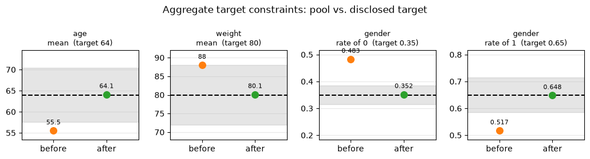
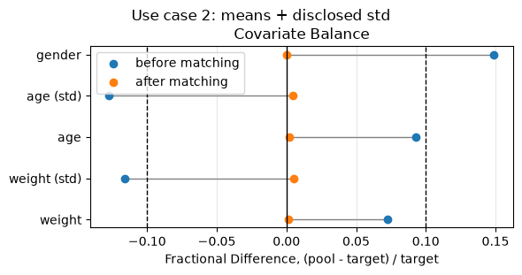
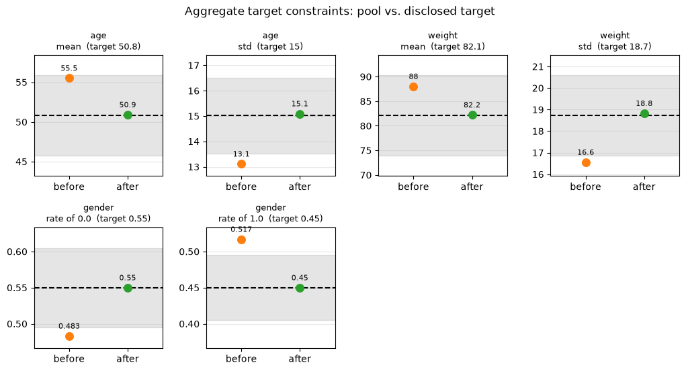
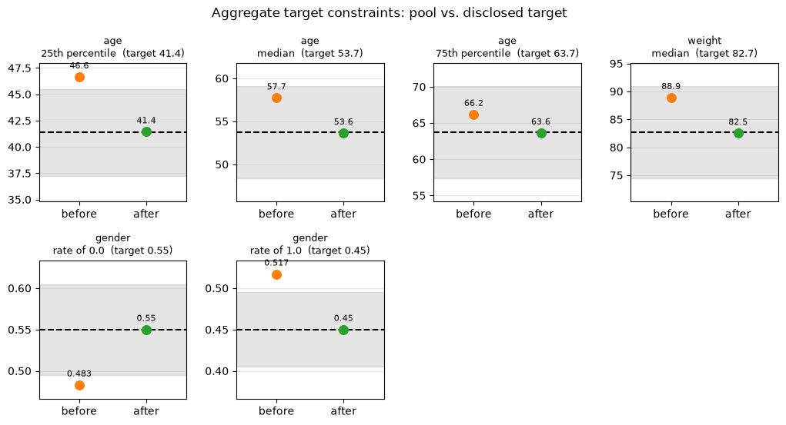
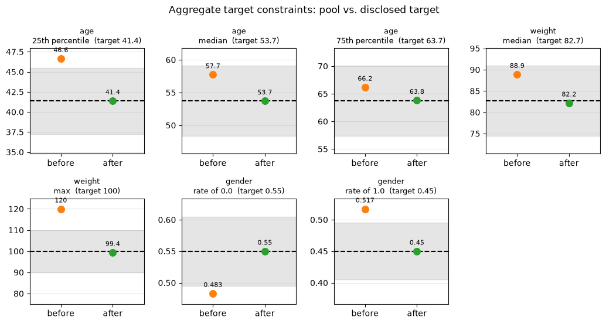

Matching a pool to an aggregate target
AggregateConstraintSatisfactionMatcher selects a subset of a patient-level pool so that its moments match a target known only through summary statistics – e.g. a published trial’s Table 1 (means, proportions, sometimes standard deviations) – rather than patient-level rows.
The notebook builds up over three use cases, each disclosing a bit more or something different about the target:
means only (plus a categoric proportion);
means and stds, which adds a variance constraint;
medians and other quantiles instead of means, plus a soft max.
Features the target says nothing about (here height and country) are not constrained, but we keep them in the MatchingData so we can still see how matching changes them.
The patient-level pool is synthetic (pybalance.sim.generate_toy_dataset); no patient-level target rows are ever used.
[1]:
import logging
import matplotlib.pyplot as plt
import pandas as pd
from pybalance.lp import AggregateConstraintSatisfactionMatcher
from pybalance.sim import (
generate_toy_dataset,
get_demo_aggregate_target_path,
load_demo_aggregate_target,
)
from pybalance.utils import (
AggregateTarget,
MatchingData,
MatchingHeaders,
aggregate_target_constraints,
)
from pybalance.visualization import (
plot_aggregate_target_match,
plot_fractional_difference,
)
%matplotlib inline
# show the matcher's CP-SAT solver output
logging.basicConfig(level=logging.INFO, format="%(message)s", force=True)
1. A patient-level (synthetic) pool
An aggregate-target match only needs patient-level data for the pool. generate_toy_dataset returns an entirely simulated one (no real patients); with n_target=0 it generates no target patients at all, since the target will come from summary statistics instead.
[2]:
m = generate_toy_dataset(n_pool=1000, n_target=0, seed=7)
pool = m.get_population("pool").drop(columns=[m.population_col])
pool.head()
[2]:
| age | height | weight | gender | haircolor | country | binary_0 | binary_1 | binary_2 | binary_3 | patient_id | |
|---|---|---|---|---|---|---|---|---|---|---|---|
| 0 | 69.436489 | 155.189260 | 79.144533 | 0.0 | 1 | 4 | 0 | 0 | 1 | 1 | 0 |
| 1 | 28.771438 | 175.270602 | 97.734561 | 1.0 | 0 | 5 | 0 | 0 | 1 | 1 | 1 |
| 2 | 62.640154 | 136.648640 | 85.170055 | 0.0 | 1 | 2 | 0 | 0 | 0 | 1 | 2 |
| 3 | 68.907932 | 189.959952 | 90.705549 | 0.0 | 1 | 3 | 0 | 0 | 1 | 1 | 3 |
| 4 | 49.571169 | 133.787109 | 76.708193 | 1.0 | 2 | 3 | 0 | 0 | 0 | 1 | 4 |
2. Use case 1 – specifying means only
An AggregateTarget is the target’s sample size n plus whatever summary statistics are disclosed:
numeric: per feature, e.g.{"mean": ...};categoric: per feature,{level: rate}– the proportion of each category.
Here the target discloses the mean age and weight and the proportion of each gender.
[3]:
my_target = AggregateTarget(
n=250,
numeric={
"age": {"mean": 64.0},
"weight": {"mean": 80.0},
},
categoric={"gender": {0: 0.35, 1: 0.65}},
)
my_target
[3]:
| feature | type | stat | value |
|---|---|---|---|
| age | numeric | mean | 64.00 |
| weight | numeric | mean | 80.00 |
| gender | categoric | 0 | 0.35 |
| gender | categoric | 1 | 0.65 |
To match, wrap the pool and the target in a MatchingData and hand it to AggregateConstraintSatisfactionMatcher, which solves for the subset of the pool whose statistics come closest to every disclosed constraint.
The headers say which pool columns we want to look at. They may include features the target does not disclose – here height and country. Those are left unconstrained by the matcher, but reported in the results, so we can see what matching does to them.
[4]:
headers = MatchingHeaders(numeric=["age", "weight", "height"], categoric=["gender", "country"])
matching_data = MatchingData(pool=pool, target=my_target, headers=headers)
matcher = AggregateConstraintSatisfactionMatcher(
matching_data, time_limit=60, num_workers=1, verbose=True
)
matched = matcher.match()
Scaling features by factor 240.00 in order to use integer solver with <= 0.5782% loss.
Solving for match population with pool size = 250 and target size = 250 (aggregate), optimizing balance (no max_mismatch cap).
Matching on 4 dimensions ...
Building model variables and constraints ...
Calculating bounds on feature variables ...
Applying size constraints on pool ...
Solving with 1 workers ...
Initial balance score: 0.3308
=========================================
Solution 1, time = 0.00 m
Objective: 631500.0
Balance (aggregate_beta): 0.0418
Patients (pool): 250
Patients (target): 250 (aggregate)
=========================================
Solution 2, time = 0.00 m
Objective: 39750.0
Balance (aggregate_beta): 0.0060
Patients (pool): 250
Patients (target): 250 (aggregate)
=========================================
Solution 3, time = 0.01 m
Objective: 32250.0
Balance (aggregate_beta): 0.0058
Patients (pool): 250
Patients (target): 250 (aggregate)
=========================================
Solution 4, time = 0.01 m
Objective: 31750.0
Balance (aggregate_beta): 0.0056
Patients (pool): 250
Patients (target): 250 (aggregate)
=========================================
Solution 5, time = 0.01 m
Objective: 31000.0
Balance (aggregate_beta): 0.0054
Patients (pool): 250
Patients (target): 250 (aggregate)
=========================================
Solution 6, time = 0.01 m
Objective: 30500.0
Balance (aggregate_beta): 0.0053
Patients (pool): 250
Patients (target): 250 (aggregate)
=========================================
Solution 7, time = 0.01 m
Objective: 30250.0
Balance (aggregate_beta): 0.0052
Patients (pool): 250
Patients (target): 250 (aggregate)
=========================================
Solution 8, time = 0.02 m
Objective: 29750.0
Balance (aggregate_beta): 0.0052
Patients (pool): 250
Patients (target): 250 (aggregate)
Status = OPTIMAL
Number of solutions found: 8
matched is a new MatchingData holding the selected subset. describe() puts the original pool, the matched pool and the target side by side. age, weight and gender move onto their targets; height and country have no target (NaN), but we can still see how they shifted as a side effect.
[5]:
(
matching_data
.describe(quantiles=[])
.join(
matched.describe(quantiles=[]),
rsuffix='_matched'
)[['pool', 'pool_matched', 'target']]
)
[5]:
| pool | pool_matched | target | ||
|---|---|---|---|---|
| population size | N | 1000.000 | 250.000 | 250.00 |
| gender | 0.0 | 0.483 | 0.352 | 0.35 |
| 1.0 | 0.517 | 0.648 | 0.65 | |
| country | 1.0 | 0.108 | 0.112 | NaN |
| 2 | 0.224 | 0.232 | NaN | |
| 3 | 0.274 | 0.288 | NaN | |
| 4 | 0.284 | 0.268 | NaN | |
| 5 | 0.110 | 0.100 | NaN | |
| age | mean | 55.520 | 64.110 | 64.00 |
| std | 13.110 | 10.530 | NaN | |
| weight | mean | 88.020 | 80.140 | 80.00 |
| std | 16.550 | 16.120 | NaN | |
| height | mean | 160.310 | 156.200 | NaN |
| std | 19.500 | 18.850 | NaN |
To check just the disclosed constraints, aggregate_target_constraints lists each one next to the value the pool achieves, and plot_aggregate_target_match draws it: one panel per constraint, with the dashed line at the disclosed target, a shaded band around it, and the pool’s value before and after matching. A successful match moves the “after” dot onto the dashed line.
[6]:
constraints = aggregate_target_constraints(matching_data).merge(
aggregate_target_constraints(matched),
on=["feature", "constraint", "target"],
suffixes=("_before", "_after"),
)
display(constraints.round(3))
fig = plot_aggregate_target_match(matching_data, matched)
| feature | constraint | target | pool_before | pool_after | |
|---|---|---|---|---|---|
| 0 | age | mean | 64.00 | 55.520 | 64.114 |
| 1 | weight | mean | 80.00 | 88.017 | 80.139 |
| 2 | gender | rate of 0 | 0.35 | 0.483 | 0.352 |
| 3 | gender | rate of 1 | 0.65 | 0.517 | 0.648 |

3. Use case 2 – adding stds
Now the target also discloses a std for each numeric feature. The matcher then constrains each variance toward its disclosed value, in addition to the mean.
Typing targets out by hand gets long, so pybalance.sim ships ready-made ones: summaries of a toy target population that disclose different amounts of information, to be matched against the pool above. load_demo_aggregate_target(use_case) returns the packaged AggregateTarget and generate_aggregate_target(use_case) derives the same thing from the toy dataset – or from your own patient-level MatchingData, via its matching_data= argument.
|
disclosed statistics |
|---|---|
|
|
|
|
|
|
match_to repeats the steps from use case 1 – build a MatchingData from the pool and a target, then run AggregateConstraintSatisfactionMatcher – so each use case below is a couple of lines.
[7]:
def match_to(target):
"""Match `pool` to an AggregateTarget; returns (matching_data, matched)."""
matching_data = MatchingData(pool=pool, target=target, headers=headers)
matcher = AggregateConstraintSatisfactionMatcher(
matching_data, time_limit=60, num_workers=1, verbose=True
)
return matching_data, matcher.match()
Load the means_std target and match. Displaying the target shows exactly what it discloses.
[8]:
target_b = load_demo_aggregate_target("means_std")
display(target_b)
before_b, after_b = match_to(target_b)
| feature | type | stat | value |
|---|---|---|---|
| age | numeric | mean | 50.795973 |
| age | numeric | std | 15.019030 |
| weight | numeric | mean | 82.079040 |
| weight | numeric | std | 18.721164 |
| gender | categoric | 0.0 | 0.550000 |
| gender | categoric | 1.0 | 0.450000 |
Scaling features by factor 240.00 in order to use integer solver with <= 0.5782% loss.
Scaling variance terms by factor 2 (vs. mean-term factor 240.0) so neither dominates the objective purely due to units.
Solving for match population with pool size = 100 and target size = 100 (aggregate), optimizing balance (no max_mismatch cap).
Matching on 4 dimensions ...
Building model variables and constraints ...
Calculating bounds on feature variables ...
Applying size constraints on pool ...
Applying variance constraints on 2 feature(s) with disclosed std ...
Solving with 1 workers ...
Initial balance score: 0.1899
=========================================
Solution 1, time = 0.00 m
Objective: 4717.0
Balance (aggregate_beta): 0.0033
Patients (pool): 100
Patients (target): 100 (aggregate)
=========================================
Solution 2, time = 0.00 m
Objective: 3567.0
Balance (aggregate_beta): 0.0026
Patients (pool): 100
Patients (target): 100 (aggregate)
=========================================
Solution 3, time = 0.00 m
Objective: 2684.0
Balance (aggregate_beta): 0.0035
Patients (pool): 100
Patients (target): 100 (aggregate)
=========================================
Solution 4, time = 0.01 m
Objective: 1730.0
Balance (aggregate_beta): 0.0038
Patients (pool): 100
Patients (target): 100 (aggregate)
=========================================
Solution 5, time = 0.01 m
Objective: 1648.0
Balance (aggregate_beta): 0.0034
Patients (pool): 100
Patients (target): 100 (aggregate)
=========================================
Solution 6, time = 0.01 m
Objective: 1387.0
Balance (aggregate_beta): 0.0037
Patients (pool): 100
Patients (target): 100 (aggregate)
=========================================
Solution 7, time = 0.02 m
Objective: 1269.0
Balance (aggregate_beta): 0.0037
Patients (pool): 100
Patients (target): 100 (aggregate)
=========================================
Solution 8, time = 0.02 m
Objective: 1130.0
Balance (aggregate_beta): 0.0037
Patients (pool): 100
Patients (target): 100 (aggregate)
=========================================
Solution 9, time = 0.02 m
Objective: 909.0
Balance (aggregate_beta): 0.0038
Patients (pool): 100
Patients (target): 100 (aggregate)
=========================================
Solution 10, time = 0.02 m
Objective: 688.0
Balance (aggregate_beta): 0.0036
Patients (pool): 100
Patients (target): 100 (aggregate)
=========================================
Solution 11, time = 0.03 m
Objective: 524.0
Balance (aggregate_beta): 0.0035
Patients (pool): 100
Patients (target): 100 (aggregate)
=========================================
Solution 12, time = 0.04 m
Objective: 512.0
Balance (aggregate_beta): 0.0036
Patients (pool): 100
Patients (target): 100 (aggregate)
=========================================
Solution 13, time = 0.05 m
Objective: 436.0
Balance (aggregate_beta): 0.0035
Patients (pool): 100
Patients (target): 100 (aggregate)
=========================================
Solution 14, time = 0.05 m
Objective: 310.0
Balance (aggregate_beta): 0.0036
Patients (pool): 100
Patients (target): 100 (aggregate)
=========================================
Solution 15, time = 0.05 m
Objective: 264.0
Balance (aggregate_beta): 0.0036
Patients (pool): 100
Patients (target): 100 (aggregate)
=========================================
Solution 16, time = 0.08 m
Objective: 248.0
Balance (aggregate_beta): 0.0036
Patients (pool): 100
Patients (target): 100 (aggregate)
=========================================
Solution 17, time = 0.11 m
Objective: 187.0
Balance (aggregate_beta): 0.0036
Patients (pool): 100
Patients (target): 100 (aggregate)
=========================================
Solution 18, time = 0.15 m
Objective: 167.0
Balance (aggregate_beta): 0.0035
Patients (pool): 100
Patients (target): 100 (aggregate)
=========================================
Solution 19, time = 0.48 m
Objective: 165.0
Balance (aggregate_beta): 0.0035
Patients (pool): 100
Patients (target): 100 (aggregate)
=========================================
Solution 20, time = 0.54 m
Objective: 114.0
Balance (aggregate_beta): 0.0036
Patients (pool): 100
Patients (target): 100 (aggregate)
=========================================
Solution 21, time = 0.73 m
Objective: 110.0
Balance (aggregate_beta): 0.0037
Patients (pool): 100
Patients (target): 100 (aggregate)
=========================================
Solution 22, time = 0.76 m
Objective: 105.0
Balance (aggregate_beta): 0.0036
Patients (pool): 100
Patients (target): 100 (aggregate)
Status = FEASIBLE
Number of solutions found: 22
[9]:
(
before_b
.describe(quantiles=[])
.join(
after_b.describe(quantiles=[]),
rsuffix='_matched'
)[['pool', 'pool_matched', 'target']]
)
[9]:
| pool | pool_matched | target | ||
|---|---|---|---|---|
| population size | N | 1000.000 | 100.00 | 100.00 |
| gender | 0.0 | 0.483 | 0.55 | 0.55 |
| 1.0 | 0.517 | 0.45 | 0.45 | |
| country | 1.0 | 0.108 | 0.12 | NaN |
| 2 | 0.224 | 0.16 | NaN | |
| 3 | 0.274 | 0.31 | NaN | |
| 4 | 0.284 | 0.27 | NaN | |
| 5 | 0.110 | 0.14 | NaN | |
| age | mean | 55.520 | 50.91 | 50.80 |
| std | 13.110 | 15.09 | 15.02 | |
| weight | mean | 88.020 | 82.22 | 82.08 |
| std | 16.550 | 18.82 | 18.72 | |
| height | mean | 160.310 | 157.29 | NaN |
| std | 19.500 | 22.09 | NaN |
age and weight should now land on their disclosed stds as well as their means, while height and country are again just reported. The plots below show the fractional difference to the target before and after matching (closer to zero is better; undisclosed features are left out), followed by plot_aggregate_target_match comparing the pool before vs. after matching against each disclosed constraint.
[10]:
plot_fractional_difference(before_b, after_b)
plt.suptitle("Use case 2: means + disclosed std", y=1.02);

[11]:
fig = plot_aggregate_target_match(before_b, after_b)

4. Use case 3 – medians and quantiles instead of means
Published Table 1s often report a median (“age, median: 41”) or other quantiles (“age, IQR: 35-52”) instead of a mean for a skewed covariate. A quantile (q, value) means P(raw <= value) = q, e.g. (0.2, 70.0) for “80% of patients weigh more than 70kg”, and a median is the single quantile 0.5: {"age": {"median": 41.0}} is exactly {"age": {"quantile": [(0.5, 41.0)]}}. Either way the disclosed value is the cutpoint: the matcher dichotomizes the raw column there and
matches the resulting rate, so you never compute the 0/1 column yourself. Here age discloses its quartiles (25th, 50th and 75th percentile) and weight only a median.
A target like this is easiest to keep in a file, and that is what load_demo_aggregate_target has been reading all along. Here is the packaged quantiles file:
[12]:
path = get_demo_aggregate_target_path("quantiles")
print(path, end="\n\n")
print(open(path).read())
/Users/gmema/src/matching-fork/venv/lib/python3.12/site-packages/pybalance/sim/data/aggregate_target_quantiles.csv
feature,statistic,parameter,value
,n,,100
age,quantile,0.25,41.37572755384545
age,median,,53.71747134991201
age,quantile,0.75,63.69799477706703
weight,median,,82.66384310636546
gender,rate,0.0,0.55
gender,rate,1.0,0.45
One row per disclosed statistic, in four columns:
|
|
|
|
|---|---|---|---|
|
blank |
blank |
the target’s sample size (one row, required) |
|
numeric feature |
blank |
the statistic |
|
numeric feature |
the proportion |
the cutpoint, i.e. P(feature <= value) = q |
|
categoric feature |
the category level |
that level’s rate (levels may be omitted) |
AggregateTarget.from_csv(path) reads it, so a published Table 1 can be transcribed into a spreadsheet and loaded directly. to_csv() writes it:
[13]:
# `to_csv()` writes the same format -- here, use case 1's hand-written target.
print(my_target.to_csv())
feature,statistic,parameter,value
,n,,250
age,mean,,64.0
weight,mean,,80.0
gender,rate,0,0.35
gender,rate,1,0.65
Now load the quantiles file with AggregateTarget.from_csv and match to it. This is exactly what load_demo_aggregate_target does; point from_csv at your own file to use your own target.
[14]:
target_c = AggregateTarget.from_csv(path)
display(target_c)
before_c, after_c = match_to(target_c)
| feature | type | stat | value |
|---|---|---|---|
| age | numeric | quantile_0.25 | 41.375728 |
| age | numeric | quantile_0.5 | 53.717471 |
| age | numeric | quantile_0.75 | 63.697995 |
| weight | numeric | quantile_0.5 | 82.663843 |
| gender | categoric | 0.0 | 0.550000 |
| gender | categoric | 1.0 | 0.450000 |
Scaling features by factor 200.00 in order to use integer solver with <= 0.4082% loss.
Solving for match population with pool size = 100 and target size = 100 (aggregate), optimizing balance (no max_mismatch cap).
Matching on 10 dimensions ...
Building model variables and constraints ...
Calculating bounds on feature variables ...
Applying size constraints on pool ...
Solving with 1 workers ...
Initial balance score: 0.1405
=========================================
Solution 1, time = 0.00 m
Objective: 100.0
Balance (aggregate_beta): 0.0000
Patients (pool): 100
Patients (target): 100 (aggregate)
Status = OPTIMAL
Number of solutions found: 1
The target has no means to compare against (NaN), so describe() alone cannot tell us whether the quantiles matched. aggregate_target_constraints (and plot_aggregate_target_match) can: they report each quantile as P(x <= value), which should equal its disclosed q after matching. describe() still shows how the means, stds and every undisclosed feature moved.
[15]:
(
before_c
.describe(quantiles=[])
.join(
after_c.describe(quantiles=[]),
rsuffix='_matched'
)[['pool', 'pool_matched', 'target']]
)
[15]:
| pool | pool_matched | target | ||
|---|---|---|---|---|
| population size | N | 1000.000 | 100.00 | 100.00 |
| gender | 0.0 | 0.483 | 0.55 | 0.55 |
| 1.0 | 0.517 | 0.45 | 0.45 | |
| country | 1.0 | 0.108 | 0.12 | NaN |
| 2 | 0.224 | 0.17 | NaN | |
| 3 | 0.274 | 0.34 | NaN | |
| 4 | 0.284 | 0.31 | NaN | |
| 5 | 0.110 | 0.06 | NaN | |
| age | mean | 55.520 | 52.47 | NaN |
| std | 13.110 | 14.42 | NaN | |
| weight | mean | 88.020 | 83.12 | NaN |
| std | 16.550 | 15.74 | NaN | |
| height | mean | 160.310 | 158.44 | NaN |
| std | 19.500 | 18.93 | NaN |
[16]:
constraints = aggregate_target_constraints(before_c).merge(
aggregate_target_constraints(after_c),
on=["feature", "constraint", "target"],
suffixes=("_before", "_after"),
)
display(constraints.round(3))
fig = plot_aggregate_target_match(before_c, after_c)
| feature | constraint | target | pool_before | pool_after | |
|---|---|---|---|---|---|
| 0 | age | P(x <= 41.3757) | 0.25 | 0.164 | 0.25 |
| 1 | age | P(x <= 53.7175) | 0.50 | 0.400 | 0.50 |
| 2 | age | P(x <= 63.698) | 0.75 | 0.661 | 0.75 |
| 3 | weight | P(x <= 82.6638) | 0.50 | 0.378 | 0.50 |
| 4 | gender | rate of 0.0 | 0.55 | 0.483 | 0.55 |
| 5 | gender | rate of 1.0 | 0.45 | 0.517 | 0.45 |

A soft maximum
Trials also report ranges (“weight, max: 100”). min and max are simply the 0th and 100th quantile, so they can be added to any numeric feature: {"weight": {"median": 82.7, "max": 100.0}}, or a min/max row in the CSV. Like every other constraint they are soft: the matcher minimizes the fraction of patients above max (below min) as part of its objective, trading it off against the rest rather than enforcing a hard bound. A limit that no pool patient violates is
simply skipped.
Here we take use case 3’s target and add a ceiling on weight:
[17]:
numeric = {feature: dict(stats) for feature, stats in target_c.numeric.items()}
numeric["weight"]["max"] = 100.0 # soft ceiling: no patient heavier than 100kg
target_d = AggregateTarget(n=target_c.n, numeric=numeric, categoric=target_c.categoric)
display(target_d)
before_d, after_d = match_to(target_d)
| feature | type | stat | value |
|---|---|---|---|
| age | numeric | quantile_0.25 | 41.375728 |
| age | numeric | quantile_0.5 | 53.717471 |
| age | numeric | quantile_0.75 | 63.697995 |
| weight | numeric | quantile_0.5 | 82.663843 |
| weight | numeric | max | 100.000000 |
| gender | categoric | 0.0 | 0.550000 |
| gender | categoric | 1.0 | 0.450000 |
Detected constant feature(s) in target population: weight_q1.0_0.0,weight_q1.0_1.0.
Scaling features by factor 200.00 in order to use integer solver with <= 0.4082% loss.
Solving for match population with pool size = 100 and target size = 100 (aggregate), optimizing balance (no max_mismatch cap).
Matching on 12 dimensions ...
Building model variables and constraints ...
Calculating bounds on feature variables ...
Applying size constraints on pool ...
Solving with 1 workers ...
Initial balance score: 0.2187
=========================================
Solution 1, time = 0.00 m
Objective: 100.0
Balance (aggregate_beta): 0.0000
Patients (pool): 100
Patients (target): 100 (aggregate)
Status = OPTIMAL
Number of solutions found: 1
The table lists the max as P(x <= 100) (max) with a target of 1: after matching, (almost) every patient should be at or below 100kg, while the quartiles and the median still land on their targets. The plot shows the same thing in the feature’s own units: it fixes each quantile (25th, 50th, 75th percentile, max) and compares the pool’s value of it before and after matching with the disclosed one. (Pass quantiles_as="proportion" to plot_aggregate_target_match to fix the cutpoint
instead and plot the proportion, as in the table.) The solver may log a note that the target is constant for the max constraint – expected, as its target rate of patients above the max is exactly 0.
[18]:
constraints = aggregate_target_constraints(before_d).merge(
aggregate_target_constraints(after_d),
on=["feature", "constraint", "target"],
suffixes=("_before", "_after"),
)
display(constraints.round(3))
fig = plot_aggregate_target_match(before_d, after_d)
| feature | constraint | target | pool_before | pool_after | |
|---|---|---|---|---|---|
| 0 | age | P(x <= 41.3757) | 0.25 | 0.164 | 0.25 |
| 1 | age | P(x <= 53.7175) | 0.50 | 0.400 | 0.50 |
| 2 | age | P(x <= 63.698) | 0.75 | 0.661 | 0.75 |
| 3 | weight | P(x <= 82.6638) | 0.50 | 0.378 | 0.50 |
| 4 | weight | P(x <= 100) (max) | 1.00 | 0.729 | 1.00 |
| 5 | gender | rate of 0.0 | 0.55 | 0.483 | 0.55 |
| 6 | gender | rate of 1.0 | 0.45 | 0.517 | 0.45 |

Takeaways
An
AggregateTargetis the target’snplus whatever summary statistics are disclosed. Build one by hand, load it from the standard long-format CSV (feature,statistic,parameter,value) withAggregateTarget.from_csv(), write one withto_csv(), or usepybalance.sim.load_demo_aggregate_target/generate_aggregate_targetfor ready-made examples.Every disclosed statistic is its own constraint, and only disclosed statistics are constrained: a numeric feature needs at least one of mean, std, median/quantile, min, max, in any combination. A std adds a variance constraint the solver actually enforces (it’s quadratic in the pool values but linear in the decision variables, so this is cheap for the CP-SAT solver); with a mean it is the spread around that mean, without one the spread around the matched subset’s own mean.
Features in the
MatchingDataheaders that the target does not disclose are left unconstrained but still reported bydescribe(), so you can see how matching changed them.AggregateTarget.categoricrates can be partially disclosed: each disclosed level is a constraint and an omitted level simply has none.AggregateConstraintSatisfactionMatcheralways usesAggregateTargetBalanceCalculator– there’s noobjectiveto choose.GeneticMatcher,PropensityScoreMatcherandConstraintSatisfactionMatcheralso acceptobjective="aggregate_beta"(or a prebuiltAggregateTargetBalanceCalculatorinstance) directly, since they already accept anyBaseBalanceCalculator.EntropyBalanceWeighter/IPTWWeighterare the remaining holdouts: they still hardcode the mean/std"beta"objective and don’t yet build anAggregateTargetBalanceCalculatorthemselves. That’s not silently wrong – a target with a disclosedmedian/quantilemakescompute_aggregate_feature_momentsraise a clear error there today, rather than matching the wrong (raw, non-dichotomized) column.
[ ]: